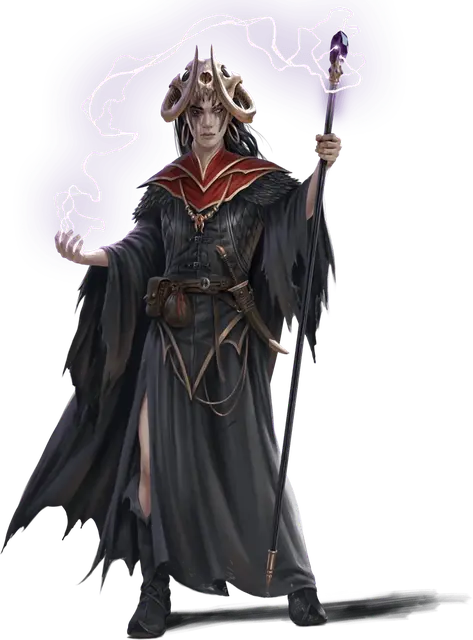

Скилла
Skylla
Средний Гуманоид (Человек, Колдун), хаотично-злой, именной НИП

Класс Доспеха 10
Хиты 39 (6к8 + 12)
Скорость 30 футов
| мод | спас | ||
|---|---|---|---|
| СИЛ | 9 | −1 | −1 |
| ЛОВ | 11 | +0 | +0 |
| ТЕЛ | 14 | +2 | +2 |
| мод | спас | ||
|---|---|---|---|
| ИНТ | 12 | +1 | +1 |
| МДР | 15 | +2 | +4 |
| ХАР | 17 | +3 | +5 |
Навыки Запугивание +5, Обман +5, Природа +3, Убеждение +5
Чувства пассивное Восприятие 12
Языки Общий, Эльфийский
Опасность 2 (450 опыта)
Бонус мастерства +2
Особенности
Особое снаряжение. Скилла владеет мистическим посохом [eldritch staff] с 10 зарядами. Посох восстанавливает 1к6 + 4 израсходованных заряда ежедневно на рассвете. Если его последний заряд израсходован, бросьте к20; при «1» посох уничтожается.
Действия
Мультиатака. Скилла совершает две атаки Мистическим посохом. Она может заменить одну из атак накладыванием заклинания.
Мистический посох. . Рукопашная атака оружием: +2 к попаданию, досягаемость 5 футов, одна цель. Попадание: 3 (1к6) дробящего урона или 4 (1к8) дробящего урона при использовании двумя руками и Скилла может израсходовать до 3 зарядов посоха, дополнительно нанося 4 (1к8) урона электричеством за каждый израсходованный заряд.
Использование заклинаний. Скилла накладывает одно из следующих заклинаний, используя Харизму в качестве базовой характеристики (Сл спасброска от заклинаний 13):
• 1/день каждое: обнаружение магии [detect magic], маскировка [disguise self], огонь фей [faerie fire], полёт [fly], гипнотический узор [hypnotic pattern], невидимость [invisibility], доспехи мага [mage armor].
Реакции
Мистический побег. Когда Скилла получает урон, она может израсходовать 3 заряда своего мистического посоха, чтобы стать невидимой и телепортироваться вместе с любым снаряжением, которое она несёт или носит, на расстояние до 60 футов в свободное пространство, которое она может видеть. Она остается невидимой до начала своего следующего хода или до тех пор, пока не атакует или не наложит заклинание.
Описание
Скилла, которая иногда выступает под псевдонимом Чарми, заключила договор колдуна с Бабой Ягой. Именно от этой могущественной архифеи Скилла черпает свою магию.
Скилла злобна и вероломна, она с такой же вероятностью предаст своих союзников, как и поможет им. Она уговорила Келека позволить ей служить главным связующим звеном между Лигой Зла и Ковеном Песочных Часов, утверждая, что ее договор с Бабой Ягой делает ее более подходящей для этой роли, чем кто-либо другой. Энделин Лунная погибель предвидела, что союзники Скиллы однажды отвернутся от неё, и поделилась этой информацией с колдуньей. Скилла отреагировала на эту новость тем, что дистанцировалась от Лиги Зла, и теперь она работает на Энделин. Скилла открыта для идеи воссоединения с Лигой, но не пока у руля Келек.